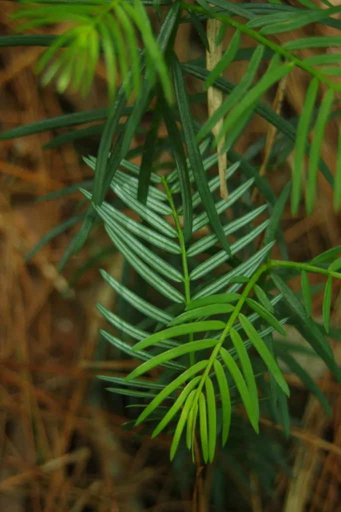

蕨类与裸子植物 · 植物界
粗榧 Cephalotaxus sinensis

粗榧是常绿小乔木，叶条形略弯、排成两列，种子可榨油，枝叶含生物碱，是药用价值较高的珍稀树种。
- 分类
- 门裸子植物门纲松纲目柏目科三尖杉科属三尖杉属
- 栖息环境
- 海拔 600–2200 m 的山地林下与灌丛，喜温暖湿润半阴
- 地理分布
- 中国长江流域及以南多省区，陕西、甘肃南部也有分布
- 保护级别
- 暂无评估；野生资源因药用采挖下降
物种志
粗榧是三尖杉科三尖杉属常绿灌木或小乔木，高可达 12 m，树皮灰褐色、片状剥落。叶片条形，略弯，长 2–5 cm，螺旋状排列成两列，表面深绿色，叶背有两条白色气孔带。雌雄异株，雄球花簇生叶腋，雌球花单生。种子核果状，卵圆形或椭圆状卵形，成熟时紫红色，外被肉质假种皮，种子可榨油。
粗榧是中国特有的树种，分布于长江流域及以南的陕西、甘肃、河南、湖北、湖南、四川、云南、贵州、广西、广东、福建、浙江、安徽等地的山地林下，喜温暖湿润、半阴的环境，常散生于阔叶林中。它生长缓慢、寿命长，四季常绿，可作园林观赏树种。种子可榨油供工业用，枝叶含三尖杉酯碱等生物碱，是提取抗癌药物的重要原料，但全株有毒，不可直接食用。目前野生资源因采挖而下降。
形态与习性
- 树高可达 12 m
- 叶条形略弯，排成两列
- 种子核果状，成熟时紫红色
- 用途种子榨油，枝叶提取生物碱
- 毒性含生物碱，全株有毒
- 习性耐阴，生长缓慢
趣味知识
- 粗榧的种子像小小的红果子，外面包着一层肉质假种皮。
- 它的枝叶含三尖杉酯碱，是提取抗癌药物的原料之一。
- 粗榧全株有毒，不能因为种子像果子就随便食用。